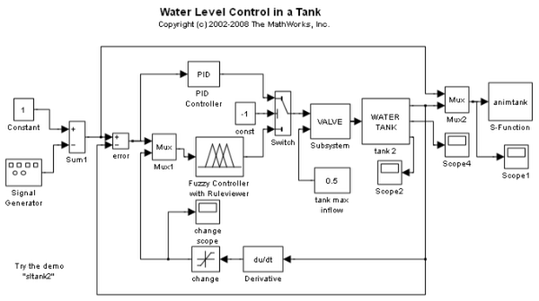
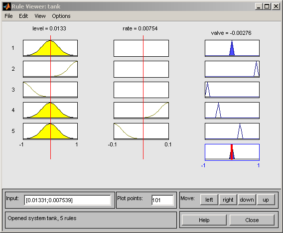
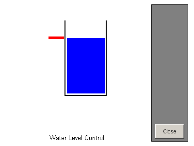

Water Level Control in a Tank
This demo shows how to use a fuzzy-logic inference system in a Simulink® model.
There are two inputs to the fuzzy controller: the rate of change of the water level and the difference between the actual and the required water levels. The controller uses these inputs to control the inflow rate.
When you run the model, the Rule Viewer updates dynamically to show which rule the fuzzy controller is using to set the flow rate.
  